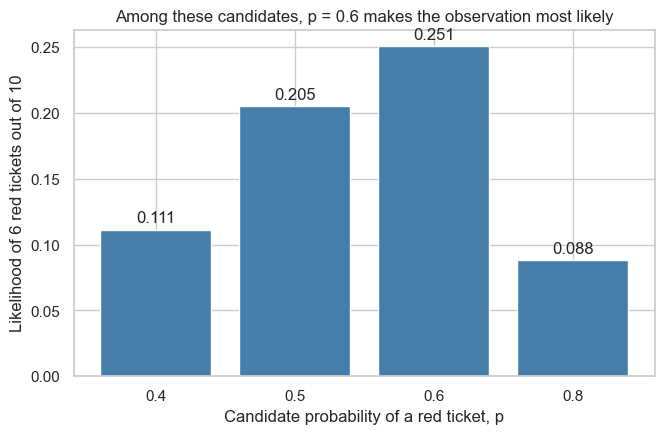
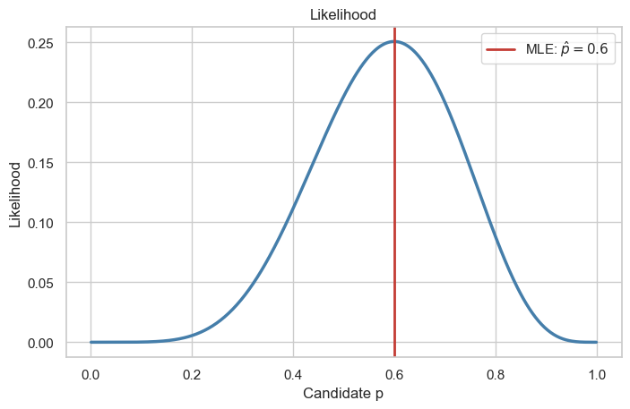
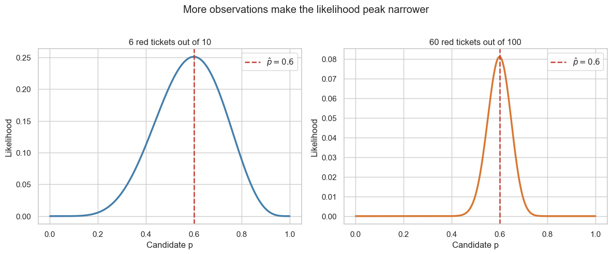

from math import comb
import matplotlib.pyplot as plt
import numpy as np
import seaborn as sns
sns.set_theme(style="whitegrid", context="notebook")Likelihood and maximum likelihood estimation

Before fitting a logistic-regression model, let’s make the central idea—likelihood—concrete. We will use simulated red/blue ticket draws rather than the gas-turbine dataset.
A red ticket is coded as \(1\), a blue ticket as \(0\), and \(p\) is the unknown probability of drawing red.
1. Likelihood for one ticket draw
Let \(Y\) represent one ticket draw: a red ticket is \(Y=1\) and a blue ticket is \(Y=0\). If \(p\) is the probability of drawing red, then
\[ P(Y=y\mid p)=p^y(1-p)^{1-y}, \qquad y\in\{0,1\}. \]
Thus, after observing one red ticket, its likelihood is \(L(p)=p\); after observing one blue ticket, it is \(L(p)=1-p\). The observed outcome is fixed, and we compare possible values of the unknown \(p\).
2. Joint likelihood for ten draws
Now suppose that ten independent tickets are drawn, and six are red. Because the draws are independent, one particular ordering of those results has likelihood \(p^6(1-p)^4\). If we observe only the count, there are \(\binom{10}{6}\) possible orderings, so the likelihood is
\[ L(p) = \binom{10}{6}p^6(1-p)^4. \]
The binomial coefficient counts the possible orderings of six red and four blue tickets. It is the same for every candidate \(p\), so it does not change which candidate maximizes the likelihood.
We hold the observations fixed and vary \(p\). Thus, likelihood is not the probability that a candidate parameter is true; it is a score for how well that candidate explains the observed data.
n = 10
red_tickets = 6
def likelihood(p, red_count, total_count):
"""Probability of this red-ticket count under candidate p."""
blue_count = total_count - red_count
return comb(total_count, red_count) * p**red_count * (1 - p)**blue_count
candidates = np.array([0.4, 0.5, 0.6, 0.8])
candidate_likelihoods = np.array([
likelihood(p, red_tickets, n) for p in candidates
])
for p, value in zip(candidates, candidate_likelihoods):
print(f"p = {p:.1f}: likelihood = {value:.4f}")
fig, ax = plt.subplots(figsize=(7.5, 4.5))
bars = ax.bar(candidates.astype(str), candidate_likelihoods, color="#457eaa")
ax.bar_label(bars, fmt="%.3f", padding=3)
ax.set(
xlabel="Candidate probability of a red ticket, p",
ylabel="Likelihood of 6 red tickets out of 10",
title="Among these candidates, p = 0.6 makes the observation most likely",
)
plt.show()p = 0.4: likelihood = 0.1115
p = 0.5: likelihood = 0.2051
p = 0.6: likelihood = 0.2508
p = 0.8: likelihood = 0.0881
3. Let the candidate vary continuously
Rather than considering only four candidates, let’s evaluate a fine grid of values between 0 and 1. The maximum of the likelihood curve is the maximum-likelihood estimate (MLE):
\[ \hat p_{\mathrm{MLE}} = \underset{p}{\operatorname{arg\,max}}\; L(p). \]
For a Bernoulli/binomial model, the MLE is the observed red-ticket fraction, \(\hat p_{\mathrm{MLE}}=6/10=0.6\).
p_grid = np.linspace(0.001, 0.999, 500)
likelihood_grid = np.array([likelihood(p, red_tickets, n) for p in p_grid])
p_hat = red_tickets / n
fig, ax = plt.subplots(figsize=(8, 4.8))
ax.plot(p_grid, likelihood_grid, color="#457eaa", linewidth=2.5)
ax.axvline(p_hat, color="#c43c35", linewidth=2, label=rf"MLE: $\hat p={p_hat:.1f}$")
ax.set(
xlabel="Candidate p",
ylabel="Likelihood",
title="Likelihood",
)
ax.legend()
plt.show()
4. More observations give more concentrated evidence
Imagine another set of 100 draws with the same observed red fraction: 60 red tickets. Both samples have \(\hat p_{\mathrm{MLE}}=0.6\), but the larger sample supplies more evidence about plausible values of \(p\). The two panels use their own vertical scales so that both likelihood curves remain readable.
fig, axes = plt.subplots(1, 2, figsize=(12, 4.8), sharex=True)
for ax, (total_count, red_count, color) in zip(
axes,
[(10, 6, "#457eaa"), (100, 60, "#d77732")],
):
likelihood_values = np.array([
likelihood(p, red_count, total_count) for p in p_grid
])
ax.plot(p_grid, likelihood_values, color=color, linewidth=2.5)
ax.axvline(0.6, color="#c43c35", linewidth=1.8, linestyle="--", label=r"$\hat p = 0.6$")
ax.set(
xlabel="Candidate p",
ylabel="Likelihood",
title=f"{red_count} red tickets out of {total_count}",
)
ax.legend()
fig.suptitle("More observations make the likelihood peak narrower", y=1.02)
plt.tight_layout()
plt.show()
5. Bridge to logistic regression
The ticket model assumes that every draw has the same red-ticket probability \(p\). In logistic regression, each observation can have a different probability because its features differ:
\[ p_i = P(y_i=1\mid\mathbf{x}_i) = \sigma(\mathbf{x}_i^\mathsf{T}\boldsymbol{\beta}). \]
The likelihood idea is unchanged: choose the model parameters that make the observed binary labels most likely. In the next lecture, we will learn how to perform that optimization.